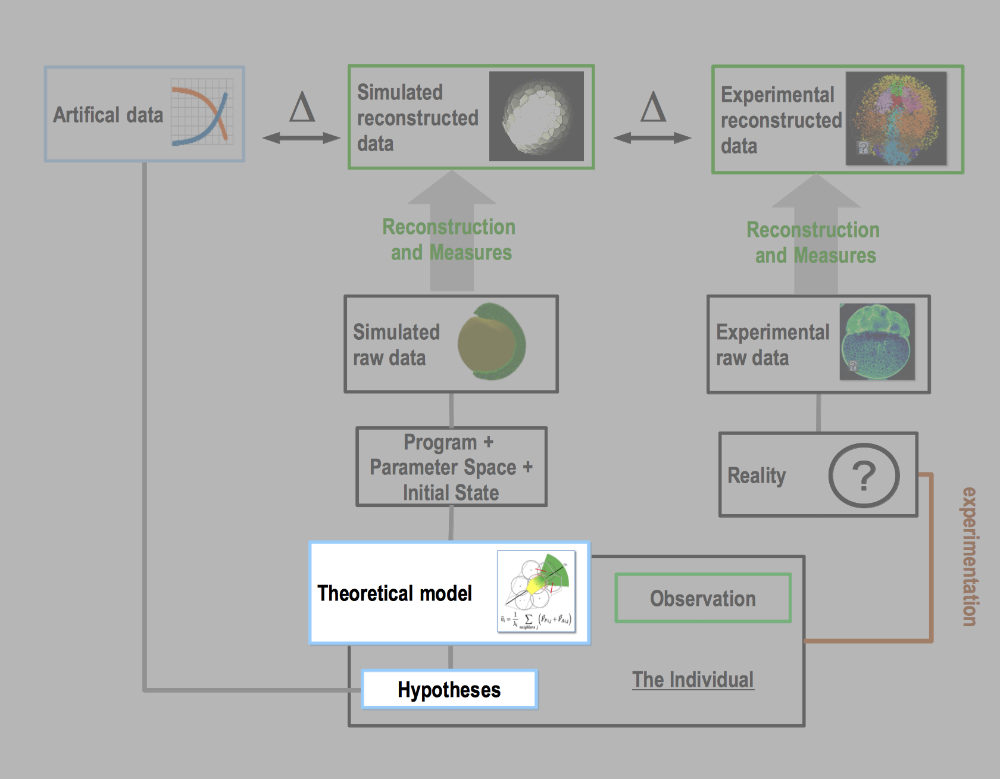
Situation of Chapter 5 in the methodological workflow.
This last of the three modeling chapters (Fig. ) lays out the first steps toward building a complete morphogenetic platform integrating mechanics (from Chapter 3) and genetics (from Chapter 4), as envisioned by the MECAGEN project. It proposes a simplified cell behavior ontology (CBO) and relates cell states, determined by the concentrations of certain proteins, to cell behaviors, determined by biomechanical parameters. In this dissertation, we describe this coupling in two different modes: basically, what should be done and what has been done so far:
Section 5.1: An ideal coupling mode, the proper MECAGEN model of coupling, which plugs the biomechanical module and the molecular/genetic regulation and signaling module into each other. This coupling goal has also been driving certain design choices in both parts from the beginning. However, these principles will only be introduced here as, in its current state, the model has not been tested yet.
Section 5.2: A practical and simplified model of cell behavior specification, inspired by Waddington's epigenetic landscapes, which bypasses the actual molecular and genetic processes and replaces their kinetic equations (defined in Section 4.2) with predefined cell states, or cell types, and lookup-table parameters with one set of values per pair of cell types. Only the diffusion dynamics (of Section 4.3) will be kept. This continuous-to-discrete transformation has been commonly practiced and will allow us here to test the mechanical hypotheses introduced in Chapter 3.
Finally, Section 5.3 illustrates our practical model by an artificial challenge of cell sorting and rearrangement, and a study of single-cell migration.
5.1. Toward a Cell Behavior Ontology
Biological systems modeling requires the choice of an ontology, i.e. a set of predefined objects organized by relationships. In our domain, the appropriate ontology is a categorization of the various cell behaviors that occur during a developmental process. Among a number of initiatives, we can mention James Glazier's Cell Behavior Ontology (CBO) initiative, which proposes an in-depth classification of heterogeneous objects and processes involved in multicellular systems, in particular development. Ontologies are generally composed of a hierarchy of categories reflecting the vision of the ontology designers.
In MECAGEN, we propose to introduce a simpler ontology based on the dynamical rules described in Chapters 3 and 4 above. The objective is to establish a two-way mapping between the genetic and molecular states of the cell on the one hand, and its mechanical behavior on the other hand. Ideally, all parameters of the biomechanical dynamics should be defined by the molecular state of the cell, as mechanical properties emerge from both the structural and regulative molecular microstructure. It means that any spatiotemporal specification of the mechanical behavior of a cell should be ruled dynamically by the outputs of its molecular and genetic regulation. Thus, formally, the project is about monitoring a certain subset of intracellular concentration levels in each cell: \(\mathbf{p}_i = \{p_{a,i}\}_{a\in M}\) (defined in Section 4.1), where \(M \subset [0, N_p-1]\), to determine the values taken by the following biomechanical parameters:
the coefficients \(w_{\mathrm{adh}}\) modulating the attraction part of the passive relaxation forces \(\vec{F}^P_{ij}\) (defined in Section 3.2.3)
binary switches \(\psi\) deciding whether or not to apply the active protrusion forces \(\vec{F}^A_{ij}\), and
the polarization axis \(\vec{U}_i\) of each cell \(i\) giving its direction of protrusion (both defined in Section 3.2.4)
All three types of parameters are potentially functions of \(\mathbf{p}_i\), but the first two types can be implemented at various levels of detail. The choice is typically between assigning a different value to every pair of cells \(i, j\), thus writing these parameters \(w^{\mathrm{adh}}_{ij} = w_{\mathrm{adh}}(\mathbf{p}_i, \mathbf{p}_j)\) and \(\psi_{ij} = \psi(\mathbf{p}_i, \mathbf{p}_j)\), or only to every pair of cell types \(\mathcal{T}, \mathcal{T'}\) covering each a certain number of cells that share the same parameters, thus writing \(w^{\mathrm{adh}}_{\mathcal{TT'}} = w_{\mathrm{adh}}(\mathbf{p}_{\mathcal{T}}, \mathbf{p}_{\mathcal{T'}})\) and \(\psi_{\mathcal{TT'}} = \psi(\mathbf{p}_{\mathcal{T}}, \mathbf{p}_{\mathcal{T'}})\), where \(\mathbf{p}_{\mathcal{T}}\) can be for example an average over \(\{\mathbf{p}_i\}_{i\in\mathcal{T}}\).
Other cell features will be decoupled from the intracellular molecular and genetic regulation in MECAGEN, and receive fixed parameter values:
cell cycle length
cell volume control,
while some mechanisms will not be included at all:
cell death
extracellular matrix.
5.1.1. Cell Behavior Ontology
In our CBO, we draw a fundamental distinction between mesenchymal cell behaviors and epithelial cell behaviors:
Mesenchymal cells are characterized by their motility, and we identify only one active behavior for them: protrusion. By protruding, mesenchymal cells are able to rearrange their neighborhood and/or migrate through it. Protrusion can be monopolar or bipolar, depending on whether it happens on one end or two ends of the cell (the neighborhoods \(\mathcal{N}^{t+}_i\) and/or \(\mathcal{N}^{t-}_i\) defined in Section 3.2.4). This behavior rests upon the following mechanisms:
cell adhesion modulation (represented by the coefficient \(w_{\mathrm{adh}}\))
cell polarization (represented by its axis \(\vec{U}_i\))
Epithelial cells are characterized by a reinforcement of lateral cellular junctions, and we identify two potential active behaviors for them: (a) intercalation in the lateral plane, orthogonal to the apico-basal axis, and (b) apical constriction, which allows a bending of the epithelial sheet (invagination). The following mechanisms are involved:
apico-basal adhesion
lateral adhesion
specification of an apico-basal polarization axis
reinforced lateral adhesion
In the remainder of this chapter, we will treat only the case of the mesenchymal cells.
5.1.2. Mechanotransduction Input of the GRN
Recent studies have shown that some genes are upregulated by mechanical forces exerted on the cell . This principle should be an integral part of the MECAGEN project, as it contributes to the MECA-to-GEN coupling part. Practically, it would mean adding a new module to our molecular and genetic simulation platform. This module becomes activated if the sum of the forces exerted on the cell are above a given threshold and simply increases the concentration change rate of a target protein \(P_a\) by a characteristic constant \(\xi_a\). Thus, whatever \(dp_a/dt\) ends up being at the end of Chapter 4 (after collecting various influences from genes, other proteins, secretion and/or transduction) it would now become:
Cell adhesion is the mechanical phenomenon that is probably most straightforward to relate to an output of molecular and genetic regulation. The intensity of the adhesion between two neighbor cells is clearly a function of the surface densities of adhesion molecules. Assuming that adhesive molecules are uniformly distributed on the cell membrane, we define at the interface between two neighbor cells \(i\) and \(j\) the surface concentration \(c_{a,ij}\) (respectively \(c_{a,ji}\)) of protein species \(P_a\) on the membrane of \(i\) (respectively \(j\)), and express it as a function of the internal concentrations \(p_{a,i}\) and \(p_{a,j}\):
where \(A_{ij}\) is the surface of contact between the cells (introduced in Section 3.2.2), and \(R_i\) and \(R_j\) are their radii (and notation \(\mathbf{p}\) subsumes the dependency on \(\mathbf{p}_i,\mathbf{p}_j\)). In addition, we assume that adhesive molecules bind individually at the cell-cell interface (other modes of binding are explored in ), thus the equation leading the adhesion coefficient \(w^{\mathrm{adh}}_{a,ij}\) of the relaxation force \(\vec{F_{ij}^P}\) created by the adhesion molecules \(P_a\) will be:
where \(k^{\mathrm{adh}}_{a}\) is an adhesion coefficient proper to molecule species \(P_a\). As multiple adhesive molecules types are generally involved between two neighbor cells, and assuming that each molecule exerts homotypic adhesion i.e. binds only with its own type, then we can sum the contributions of various \(P_a\) species as follows:
where \(M_{\mathrm{adh}} \subset M\) is the family of adhesion proteins within the set of MECAGEN coupling proteins.
5.1.4. Cell Polarization
Every active cell behavior exploited in MECAGEN requires a polarization axis. In real cells, polarization correlates with an asymmetry of intracellular molecular concentrations. In our model, however, since we made the choice of one particle per cell, there can be no spatialization of intracellular material. Thus we chose to represent this asymmetry by 3D vectors \(\vec{U}_i\) passing through the centers of the cells (Section 3.2.4). More precisely, here, a cell \(i\) can be potentially polarized by multiple mechanisms as the developmental process unfolds, corresponding to multiple candidate polarization axes, which we denote by \(\{\vec{U}_{d,i}\}_{d}\) with \(d=1...N_d\). Each of them is associated with a binary variable \(\psi_d\) expressing whether or not \(\vec{U}_{d,i}\) contributes to \(\vec{U}_i\). Generally, for a mesenchymal cell, only one of these flags is nonzero if the cell displays an active protrusion behavior, otherwise they are all zero and no polarization axis needs to be defined (the case of epithelial cells is more complex, with two possible polarization axes, but will not be described here to avoid cluttering the notations). The link between the \(\vec{U}_{d,i}\)'s and \(\vec{U}_i\) will be further explained in the context of cell type-to-type interactions in Section 5.2.4. For now, we keep the complete list \(\{\vec{U}_{d,i}\}_{d}\) and describe how it is managed.
We define here three possible modes of determination for each candidate axis of polarization:
(a) a local gradient-based or chemotactic mode (one of the GEN-to-MECA coupling links)
(b) a cell-cell contact propagation mode, and
(c) a force induced mode (both modes of the MECA-to-MECA sort).
Additionally, a default mode (d) is selected if a polarized cell has no input to trigger any of these three mechanisms. The default mode randomly re-orients the polarization axis until another polarization mode takes over. In sum, each \(\vec{U}_{d,i}\) may be determined by one of these four modes—and, within mode (a), by several possible protein types \(P_a\). Before describing these modes in more detail, we first clarify the update algorithm of each candidate polarization axis. The new candidate axis \(\vec{U}^{\prime}_{d,i}\) is instantaneously calculated in one simulation step, however, it is not immediately adopted and instead is combined with the current vector \(\vec{U}_{d,i}\) via a memory coefficient \(\omega \geq 0\):
(a) Local gradient-based mode: This mode expresses a classical vision of polarization, which is for example often used in chemotactic cell behavior, and supposes that the cell is able to detect an asymmetry of the extracellular ligand concentration in its local vicinity. In MECAGEN, this asymmetry is determined using the abstract graph of neighborhood relationships \(\mathcal{N}^t_i\) (Section 3.2.2) and the extracellular ligand quantities \(q_a\) (Section 4.2.1). This mode is associated with one particular ligand type \(Q_a\) and defines the candidate axis of polarization to be a weighted average of the neighborhood edges \(\vec{u}_{ij}\), in which the weights are polynomial functions of the differences of ligand concentrations:
$$\vec{U}^{\prime}_{d,i} = \sum_{j \in \mathcal{N}^t_i} (q_{a,j} - q_{a,i})^m \vec{u}_{ij}$$
where \(q_{a,i}\) (resp. \(q_{a,j}\)) is the local quantity of extracellular ligand \(Q_a\) surrounding \(i\) (resp. \(j\)), and \(m\) is an integer controlling the sensibility of detection of local concentration differences (\(m\) must be odd to conserve vector directions, typically \(m=3\)).
(b) Cell-cell contact propagation mode: This mode represents another way to establish polarization axes in a cellular field. It is based on the notion that the asymmetric spatialization of intracellular material in a polarized cell translates into a surfacic asymmetry, which neighbor cells can sense. Only polarized neighbors \(j\), i.e. for which \(\psi_{d,j} = 1\) influence their vicinity. Thus, the cell-cell contact propagation mode simply defines the polarization axis of cell \(i\) as the average of its polarized neighbors' axes:
$$\vec{U}^{\prime}_{d,i} = \sum_{j \in \mathcal{N}^t_i} \psi_{d,j} \vec{U}_{d,j}$$
(Note that this an average of one candidate type of axis over different cells \(j\), in which several of the \(\psi_{d,j}\) flags may be equal to 1; not to be confused with a sum over different candidate types \(d\) of the same cell, in which generally only one of these flags is nonzero.)
(c) Force-induced mode: Recent studies have unveiled a novel mechanism for the propagation of polarization axis based on mechanical interactions . Weber et al. demonstrate that a mechanical traction exerted at one end of a Xenopus cell triggers the formation of protrusion in the opposite direction through a reorganization of internal intermediate keratin filaments. In MECAGEN, we idealize this mechanism by orienting the candidate polarization axis of a cell \(i\) in the direction opposite to the average force exerted by the neighbor cells \(j\) that are protruding on and around it:
$$\vec{U}^{\prime}_{d,i} = - \frac{1}{N_{A,\mathrm{ext}}} \sum_{j \in \mathcal{N}^t_i} \vec{F}^{A,\mathrm{ext}}_{ij}$$
where \(\vec{F}^{A,\mathrm{ext}}_{ij}\) is the extrinsic active force exerted by \(j\) over \(i\) (the dashed red arrows of Fig. , Section 3.2.4), and \(N_{A,\mathrm{ext}}\) is the number of neighbors \(j\) for which this contribution is not zero (although this normalization is unnecessary as it will be taken care of by step 1. in the above update algorithm).
(d) Default mode: When a protruding cell does not receive spatial cues about how to orient itself, it enters a blebbing state. In the MECAGEN model, such cells receive a completely random polarization axis at regular time intervals, typically 5 simulated minutes.
5.2. Waddingtonian Timeline Specification
Section 5.1 described the ideal MECAGEN coupling framework, in which the physico-chemical causal and consequential factors (inputs and outputs) of the biomechanics of embryo development are the variables of a gene/molecular regulation and signaling network, as it can be typically represented in BioTapestry. In this section, our practical objective will be to study development based on cell forces and cell types alone, bypassing the molecular and gene dynamics. As Odell et al. put it in , cell forces, similarly to clocks, morphogens, or potentials, are the cause which explains the morphogenetic motion. To this aim, we decided to shortcircuit molecular and genetic interactions and, instead of relying on dynamical GRN outputs, read out cell behaviors directly from a novel parameter specification tool, which we call the Waddingtonian Timeline Specification (WTS; see Section 1.1.4 for a reminder of Waddington's ideas about epigenetic landscapes and cell fates). We explain in the following subsections how the mechanical parameters of our CBO (Section 5.1) can be tuned by this WTS operator. A specific graphical user interface has also been developed for this purpose and will serve as a support for the presentation.
5.2.1. Cell Types
The first step of a WTS is to carve the hillside by specifying a temporal series of cell types \(\{\mathcal{T}(i, t)\}\) that cells may adopt during the developmental process, and the transition rules among these types:
First, we segment the timeline into stages through particular points in time \(\{t_1, t_2, ...\}\) at which new cell types may be introduced. For example, Stage 2 corresponds to the time interval \([t_2, t_3)\). During one stage, cells may transition from one existing type to another under the rules specified in a table (see next). The overall WTS structure can be represented as a pseudo-tree of cell types (with lateral transfers among the branches) expanding over time (Fig. ).
Then, we specify the conditions inducing a cell to change its type. We employ the classical concept of differentiation to name this process. In our simplified model here, differentiation depends on a Wolpertian French flag-like positional information mechanism (see review in Section 2.1.3). During stage \(S = [t_S, t_{S+1})\), if the local ligand concentration \(q_{a,i}\) of molecular species \(Q_a\) on cell \(i\) exceeds (or sinks below) a given threshold \(\theta_a\), then cell \(i\) changes types. Generally, the cell's new type is a function of its current type and a differentation operator \(\mathscr{D}\) represented by a ruleset or lookup table predefined for each stage (Fig. ), which we denote by \(\mathscr{D}_S\). This table is organized in modules parametrized by triplets composed of ligand species, their respective thresholds and their signs denoted \(\epsilon_a\) (expressing whether the rule is about an exceeding or a sinking concentration, i.e. \(\epsilon_a q_{a,i} \geq \epsilon_a \theta_a\)). In summary, at any time \(t\in S\), a type transition can be formally written:
$$\mathcal{T}(i, t) \leftarrow \mathscr{D}_S\big[\mathcal{T}(i, t), \{(Q_a, \theta_a, \epsilon_a)\}_{a\in M}\big].$$
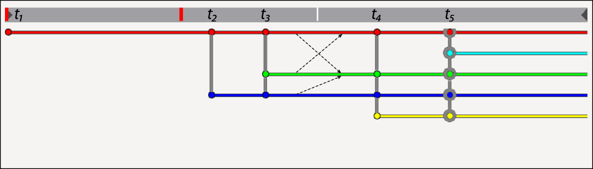
Waddingtonian timeline of cell types \(\{\mathcal{T}(i, t)\}\). The grey bar on top is the time axis (oriented left to right), segmented into stages \(S = [t_S, t_{S+1})\). (The thin white time tick is the current time step of the simulation and the thick red time ticks mark backup & restore points of the entire embryo state.) The colored horizontal branches symbolize the types that cells can potentially take, and correspond to the grooves of a Waddingtonian landscape (Fig. ). Here, we can see 5 stages in the timeline corresponding respectively to the onset of 1 type (red), 2 types (red and blue), ..., and 5 types (red, cyan, green, blue, yellow). Differentiations (type transitions) may happen during each stage, for example shown here in Stage 3: the three thin dashed arrows correspond to the differentiation table of Fig. below, indicating that type red may become green, green may become red, and blue may become green. In this WTS graphical interface, stages can also be selected manually to specify their parameters (as will be shown in the next figures): here, Stage 5 is selected by clicking on \(t_5\), which is represented by gray circles on all the type nodes.
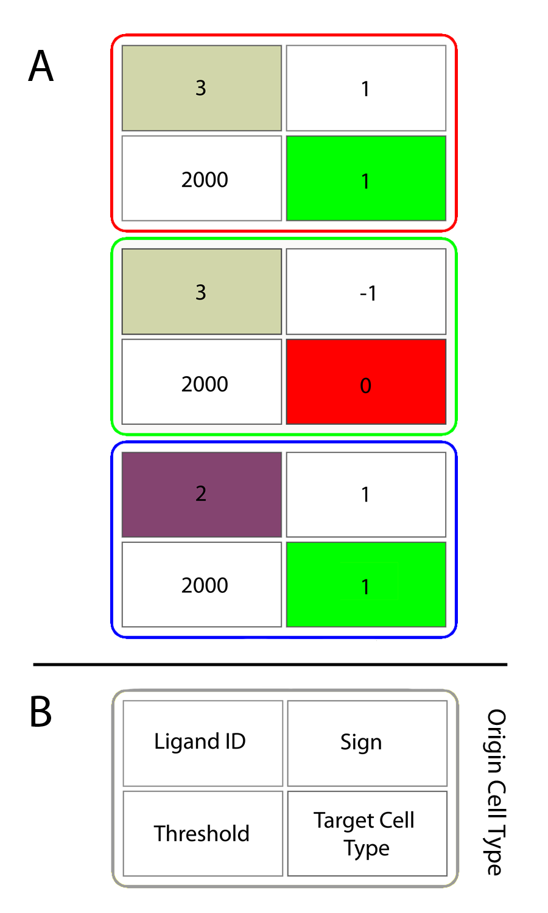
Visualization of the differentiation (type-transition) operator \(\mathscr{D}\). (A) This particular table represents the possible transitions between cell types during Stage 3 above, thus can be denoted \(\mathscr{D}_3\). It contains three differentiation modules displayed in one column, one module by origin type. In each module, the current cell type \(\mathcal{T}(i, t)\) is represented by the frame color, the target cell type by the color (or id) of the bottom-right block, and the ligand-threshold-sign triplet \((Q_a, \theta_a, \epsilon_a)\) by the top-left block's color (or id), bottom-left block's value, and top-left block's value. Each cell changes its type depending on whether \(\epsilon_a q_{a,i} \geq \epsilon_a \theta_a\). (B) The generic template of one differentation module inside one origin type.
5.2.2. Ligand Sinks and Sources
Once the backbone of the WTS has been designed, the parameters of ligand diffusion must be specified. At each stage \(S\), we define sources and sinks for each ligand through another table denoted \(\mathscr{L}_S\) (Fig. ). Each cell type can potentially secrete or absorb any ligand type \(Q_a\).
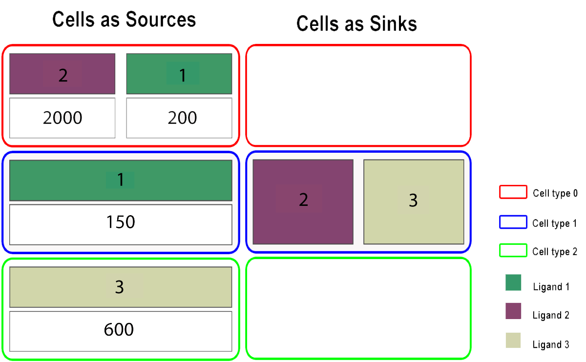
Visualization of the ligand diffusion parameters \(\mathscr{L}\). This is the particular table at Stage 3, thus can be denoted \(\mathscr{L}_3\). Left column: Cells as sources. Each module corresponds to a current cell type (denoted by its frame color) and is composed of one or several pairs of boxes displayed vertically. The top box indicates the color (or id) of the secreted ligand \(Q_a\). The bottom box indicates the rate \(s_a\) of ligand secreted by each cell belonging to the cell type (defined in Section 4.2.1). Thus, red cell types 0 secrete both ligand types 2 (dark green) and 1 (purple), with rates respectively 2000 and 200. Right column: Cells as sinks. Each module only specifies the type (color or id) of the ligand that the cells can absorb, if any (red and green cell types absorb none). No particular quantity is specified as we assume here that all the ligand is absorbed by the cells acting as sinks.
Additionally, the spatial configuration of the ligand sources must also be specified. The module used for this type of specification (not displayed here, but see two examples in Figs. and ) is adapted to the spherical geometry of the zebrafish embryo. We define, per cell type, the id of the ligand and the geometrical border of the area of secretion. Assuming a spherical embryo, an orthonormal coordinate frame is set up along the animal-vegetal (AV) axis, antero-posterior (AP) axis, and bilateral symmetry left-right (LR) axis. Then, on each axis, we define two cutoff values to extract a slice and take the intersection of all three slices to define the source region of ligand release. Several such source regions can be defined per cell type. Thus the spatial ligand source table is essentially composed of sextuplets of cutoff coordinate values for each ligand inside each cell type module. External sources of ligands, such as the yolk, may also be added.
5.2.3. Passive Force's Adhesion Modulation
Here too, the adhesion coefficient \(w_{\mathrm{adh}}\) of relaxation forces \(\vec{F}^P_{ij}\) is simply specified by pair of cell types, thus can be written \(w^{\mathrm{adh}}_{\mathcal{TT'}}\) for \(i\in\mathcal{T}\) and \(j\in\mathcal{T'}\). Since passive adhesion forces are symmetrical, then \(w^{\mathrm{adh}}_{\mathcal{TT'}} = w^{\mathrm{adh}}_{\mathcal{T'T}}\) and these coefficients can represented by a triangular \(\mathcal{T}\times \mathcal{T'}\) matrix \(\mathscr{P}\) (Fig. ).
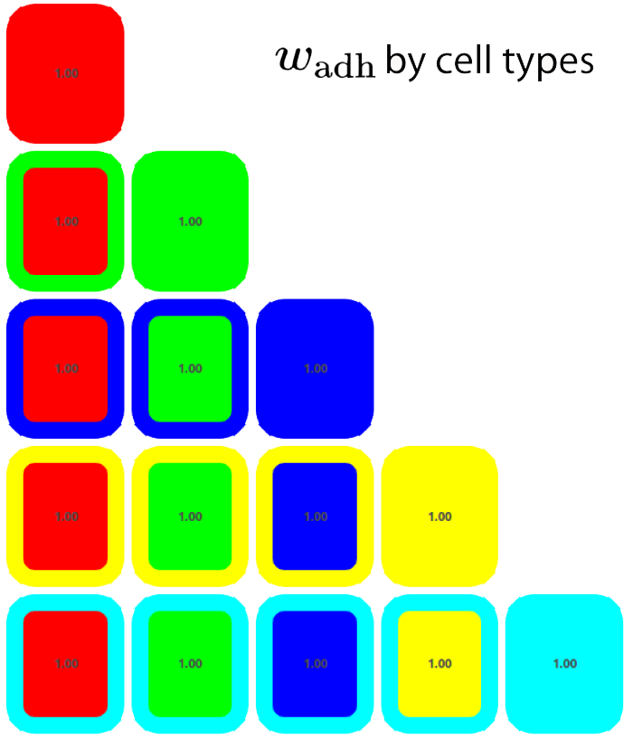
Visualization of the passive adhesion coefficients \(\mathscr{P}\). This is the particular table at Stage 5, thus can be denoted \(\mathscr{P}_5\). The matrix is symmetrical so only half of the coefficients are displayed. The outer frame color represents cell types by row, and the inner color cell types by column. Here, all values of \(w^{\mathrm{adh}}_{\mathcal{TT'}}\) are uniformly set to 1.00.
5.2.4. Active Cell Behavior Specification
Finally, once the timeline frame, the differentiation table \(\mathscr{D}\), the ligand sources/sinks table \(\mathscr{L}\), and the passive adhesion force matrix \(\mathscr{P}\) are all defined, the active cell behavior can also be set up by adding other behavioral modules for a given cell type at a given stage. To this aim, an active protrusion table \(\mathscr{A}\) (Fig. ) is composed of modules associated to an origin cell type and containing four parameters:
the target cell type that the protrusion is affecting
the chosen index \(d\) among all the various candidate axes of protrusion \(\{\vec{U}_{d,i}\}_d\), which can be calculated here only by one of the ligand-based mode (a) or random mode (d) (see Section 5.1.4)
the intensity \(f^A\) of the protrusive force (length of the larger dashed arrows in Fig. , Section 3.2.4)
a ternary value equal to \(+1\) if the cell is monopolar in the direction of \(\mathcal{N}^{t+}_i\), \(-1\) if it is monopolar in the opposite direction \(\mathcal{N}^{t-}_i\), or \(0\) if it is bipolar i.e. protruding in both directions.
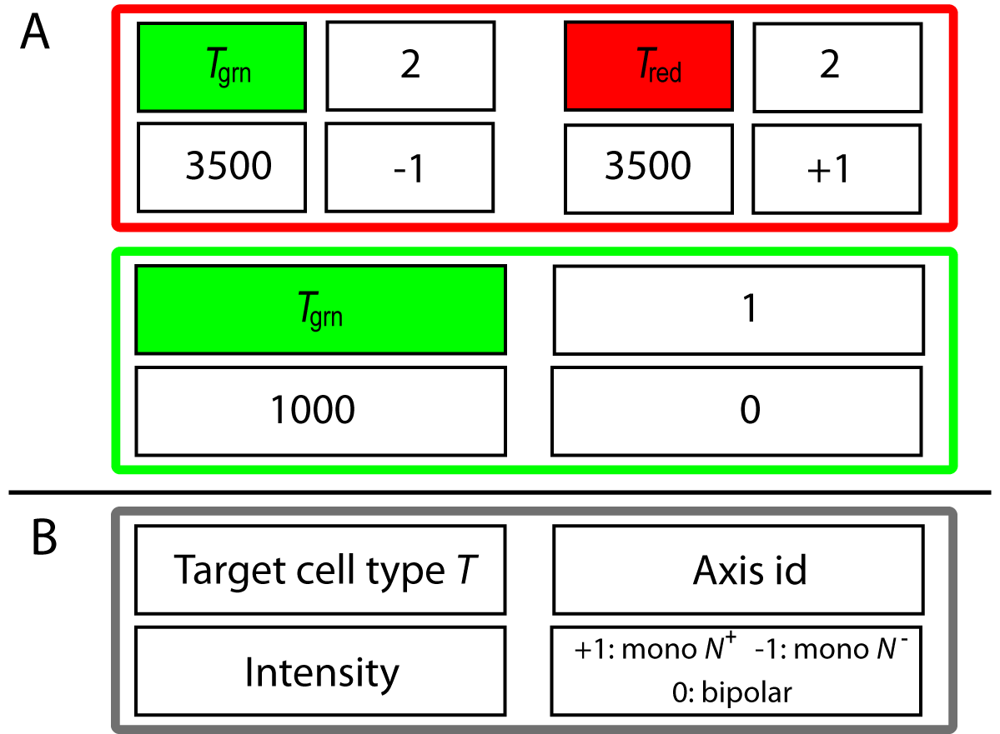
Visualization of the active protrusion coefficients \(\mathscr{A}\). This is the particular table at Stage 2, thus can be denoted \(\mathscr{A}_2\). (A) Two cell types are involved here: red and green. In each cell type's module, protrusion is represented by four parameters. Top-left: target cell type; top-right: the chosen polarization axis id \(d\); bottom-left: the intensity of the protruding force \(f^A\); bottom-right: the type of protrusion, either monopolar\(+\), monopolar\(-\) or bipolar. (B) The generic template of one active protrusion module inside one origin type.
In summary, The Waddingtonian timeline is a novel, yet limited, method of specifying cell behaviors through space and time. It allows a partial exploitation of the principles involved in MECAGEN but it is sufficient to start exploring the mechanical space and coupling principles. In particular, it will be used in some of the specific case studies of the Zebrafish mechanical development developed in the second part of the manuscript, esecially in Section 8.5 dedicated to a study of intercalation patterns during epiboly.
5.3. Illustration on Artificial Cell Sorting
One of the most interesting aspects of the mechanical MECAGEN project is the attempt to unify the causal mechanisms of most individual and collective events involving mesenchymal cells during animal development. The major point in our study here is that cell motility is acquired through cell protrusive activity. In this section, we illustrate this principle through two abstract experiments, such as cell sorting (Section 5.3.1) and individual cell migration (Section 5.3.2).
Historically, spontaneous cell sorting and rearrangement is one of the multicellular phenomena that attracted the greatest number of theoretical models. Steinberg was the first to propose a fundamental biomechanical principle to explain it, which he called the Differential Adhesion Hypothesis (DAH) (see brief review in Section 2.1.5). Graner and Glazier also proposed a theoretical model based on same idea expressed in the Cellular Potts framework, where the space is a grid and cell particles (pixels) change domains according the minization of a global energy term, mimicking movement (see Section 3.1.1). In short, the main idea is that collective ballet of spatial cell reorganization emerges from local rearrangements at the level of cell-cell contacts via elective affinities.
We performed here similar sorting experiments in an abstract setting. Instead of the temperature parameter, an often used analogy from thermodynamics (in this particular case corresponding to an intrinsic cell motility coefficient that controls membrane fluctuations and the sorting efficiency), we explore our own parameter ontology, centered on the orientation of the polarization axis. Our artificial model performs similarly to Cellular Potts with a different dynamics and parameter space. In the first exercise below, we illustrate this mechanism with three sorting experiments realized on a bilayer comprising about five thousand cells. The sorting mode will depend on the mechanical parameters discussed above (Section 5.1), mainly the protrusion axis and the adhesion coefficient of the relaxation force. In the second exercise, we present a simple individual cell migration experiment based on the same assumptions.
5.3.1. Cell Sorting: Revisiting a Classical Problem
In the three sorting experiments presented here, we use the same setup as in Section 4.4 about illustrating gene regulation and molecular signaling—with the essential difference that, here, cells can move but do not change types. In the general WTS framework presented above (Section 5.2.1), this means that we are looking inside one stage \(S\) with only two horizontal cell type lines, one red and one green, and no transition arrows between them. Thus there is no differentation table \(\mathscr{D}\). For the spatial layout, we have again 4,886 cells in a thin 3D space delimited by two planes at a distance equivalent to four cell diameters. All figures below represent the cellular assembly from an external viewpoint that make them appear like a 2D tissue. Initially, cells are randomly assigned one of two cell types: a red cell type \(\mathcal{T}_{\mathrm{red}}\) and a green cell type \(\mathcal{T}_{\mathrm{grn}}\), creating two populations of fixed size. As usual, the forces that apply between two cells are composed of the passive relaxation forces \(\vec{F}^P_{ij}\) and the active protrusion forces \(\vec{F}^A_{ij}\) from Sections 3.2.3 and 3.2.4. Accordingly, the parameters that we will tune here are:
the adhesion coefficient \(w_{\mathrm{adh}}\) of the passive forces,
and
the axis of polarization \(\vec{U}_i\) of each cell (which includes the polarization mode, the force intensity \(f^A\), and the polarity)
Cell neighborhoods will be given by the usual topological sets \(\mathcal{N}^t_i\) for passive adhesion forces (defined in Section 3.2.2) and \(\mathcal{N}^{t+}_i\) and \(\mathcal{N}^{t-}_i\) for the active protrusion forces (defined in Section 3.2.4).
Experiment I: Strong homotypic adhesion and random protrusion axis
Experiment I setup
In the first experiment, there is no ligand diffusion, thus table \(\mathscr{L}\) of Section 5.2.2 is empty. We now adapt our view of the DAH to our framework to configure the passive adhesion table \(\mathscr{P}\). Both cell populations have a strong homotypic adhesion, i.e. a large adhesion coefficient \(w_{\mathrm{adh}}\) for the passive forces exerted between cells of the same type, and a weak heterotypic adhesion, i.e. a small adhesion coefficient between cells of different type. Using our previous notations from Section 5.2.3, this means a simple two-type table \(\mathscr{P}\) with one high value \(w^{\mathrm{adh}}_{\mathcal{TT}} = w^{\mathrm{adh}}_{\mathcal{T'T'}} = 5.0\) and one low value \(w^{\mathrm{adh}}_{\mathcal{TT'}} = w^{\mathrm{adh}}_{\mathcal{T'T}} = 1.0\), where \(\mathcal{T},\mathcal{T'}\) stand for \(\mathcal{T}_{\mathrm{red}},\mathcal{T}_{\mathrm{grn}}\) (Fig. ).
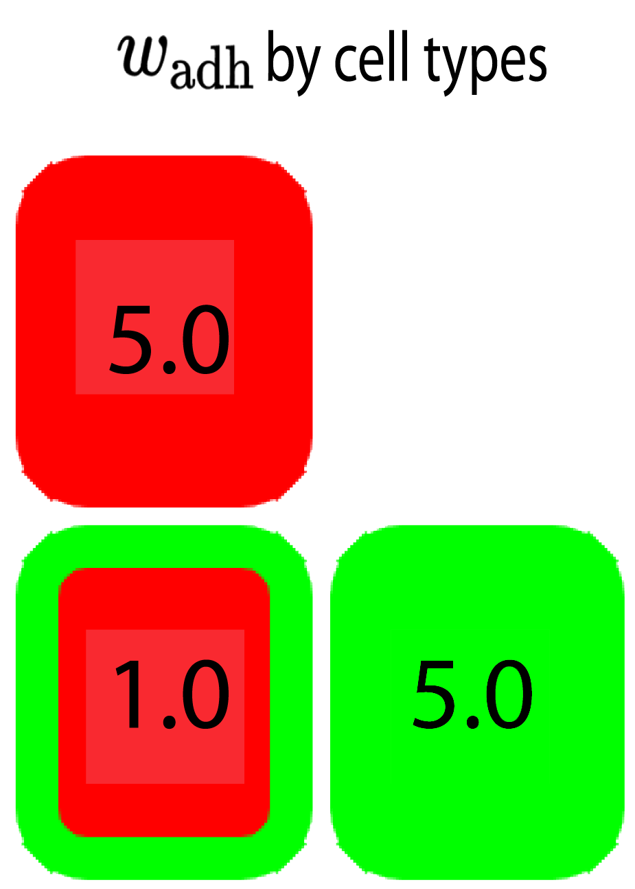
Experiment I passive adhesion table \(\mathscr{P}\). See definition in Section 5.2.3 and text for details. In this case, homotypic adhesion is strong (5.0), heterotypic adhesion is weak (1.0).
Now, relaxation would not be sufficient in itself to trigger a sorting behavior if no active protrusive force was involved. For this purpose, we let the cells perform protrusive activity on every neighbor cell, whether they belong or not to the same population. We follow here the default mode of polarization (d) presented in Section 5.1.4., i.e. the polarization axis \(\vec{U}_{d,i}\) determining which neighbor cells are inside the polar domain \(\mathcal{N}^{t+}_i\) of a protruding cell \(i\) will receive a random orientation. In these experiments, it corresponds to an axis index \(d=3\) from a list of three candidate axes (Fig. ). The other two axis indices will be explained in the experiments below.
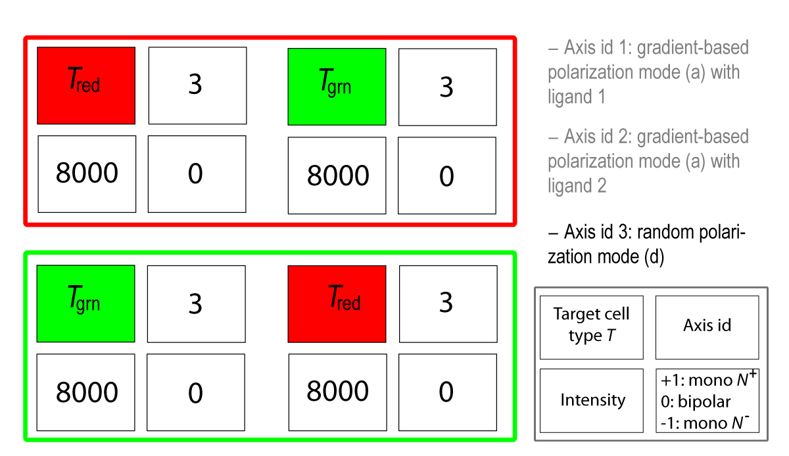
Experiment I active protrusion table \(\mathscr{A}\). See definition in Section 5.2.4 and text for details.
Experiment I results
In Fig. and Movie , we can visually observe the effective consolidation and growth of two homotypic clusters of red and green types. The sorting rate seems to tend to a plateau at some point in the simulation, however (quantity not measured). It is not clear whether the reassortment would eventually be completed, i.e. whether the two domains would reach a minimal-energy, straight boundary line between them, or how long it would take. This would require a more thorough exploration of the parameter space defined by tables \(\mathscr{P}\) and \(\mathscr{A}\) above. For now, the goal of this experiment was only to show a proof-of-concept.
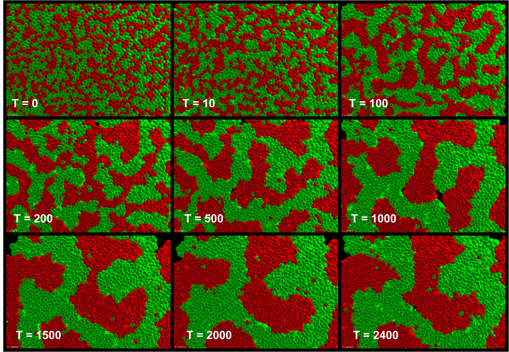
Experiment I: Strong homotypic adhesion and random protrusion axis. See text for comments. The homotypic adhesion coefficient (\(w_{\mathrm{adh}} = 5\)) is higher than the heterotic coefficient (\(w_{\mathrm{adh}} = 1\)). All cells have bipolar protrusive activities with random polarization axes (mode (d) in Section 5.1). The rate of cluster size growth is decreasing over time. The time is provided through the number of simulation time steps.Experiment I: Strong homotypic adhesion and random protrusion axis. For caption, see Fig. .
In the second experiment, the homotypic adhesion is once again stronger than the heterotypic adhesion, thus the passive adhesion table \(\mathcal{P}\) is similar to Experiment I except with different proportions (Fig. ). Polarization axes, however, are not determined randomly as before; instead, it is the ligand-based chemotactic mode (a) of axis specification that is at work here (see Section 5.1.4). Two different ligand molecular species are secreted, \(Q_1\) and \(Q_2\), and both types of cells \(\mathcal{T}_{\mathrm{red}}\) and \(\mathcal{T}_{\mathrm{grn}}\) are potential sources for these ligands with the same secretion rates \(s_1\) and \(s_2\) in the ligand table \(\mathcal{L}\) (Fig. ). No cell absorbs any ligand, so there is no boundary condition on the low concentration end. On the high concentration end, however, there is a spatial constraint on where the ligand sources are located (explanation at the bottom of Section 5.2.2): two rectangular domains are predefined on the left and right border of the frame, and whenever a cell of any type enters the right (resp. left) domain, it starts secreting \(Q_1\) (resp. \(Q_2\)).
Concerning active protrusion, the rule is that \(\mathcal{T}_{\mathrm{red}}\) cells only respond to the gradient created by ligand \(Q_1\), and \(\mathcal{T}_{\mathrm{grn}}\) cells only respond to \(Q_2\). The other parameters of the active protrusion table \(\mathcal{A}\) (Fig. ) concern the protrusion force intensity \(f^A\) and the polarity, which is \(+1\) here for both cell types, meaning that all cells protrude in the uphill direction of their gradient of choice. The net effect is that red cells orient their polarization axis toward the left border (higher \(q_1\) concentration values) and green cells toward the right border (higher \(q_2\)). Note that, contrary to Experiment I, the protrusive behavior here is exclusively heterotypic, i.e. cells exert an active protruding force only on the neighbors that are of the other cell type (red cells protrude on the green cells only, and vice-versa). In other terms all the active mechanical interactions (described in Fig. ) occur at the interface between the two populations, not within populations.
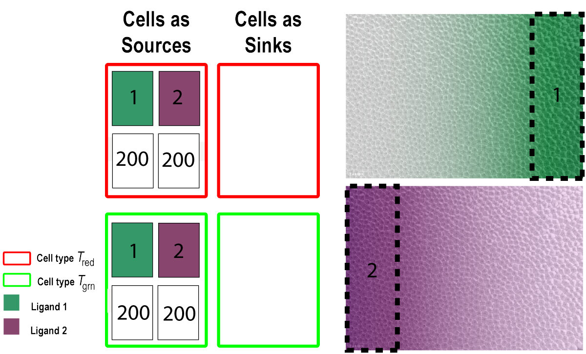
Experiment II ligand diffusion table \(\mathscr{L}\). See definition in Section 5.2.2 and text for details. In summary, both cell types secrete both ligand types \(Q_1\) and \(Q_2\) with the same secretion rates \(s_1 = s_2 = 200\) simulation units. They do this, however, only if they enter one of the source regions on either vertical border of the domain.
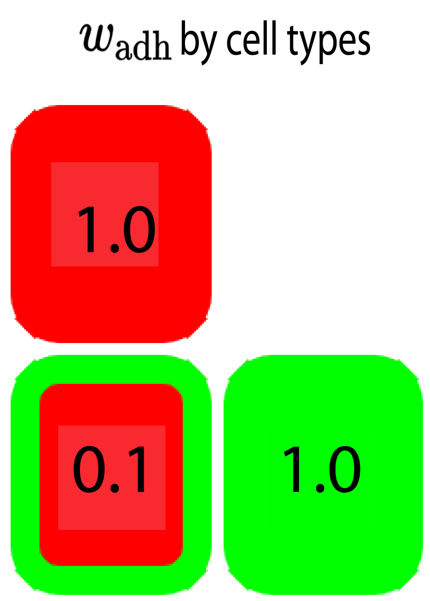
Experiment II passive adhesion table \(\mathscr{P}\). See definition in Section 5.2.3 and text for details.
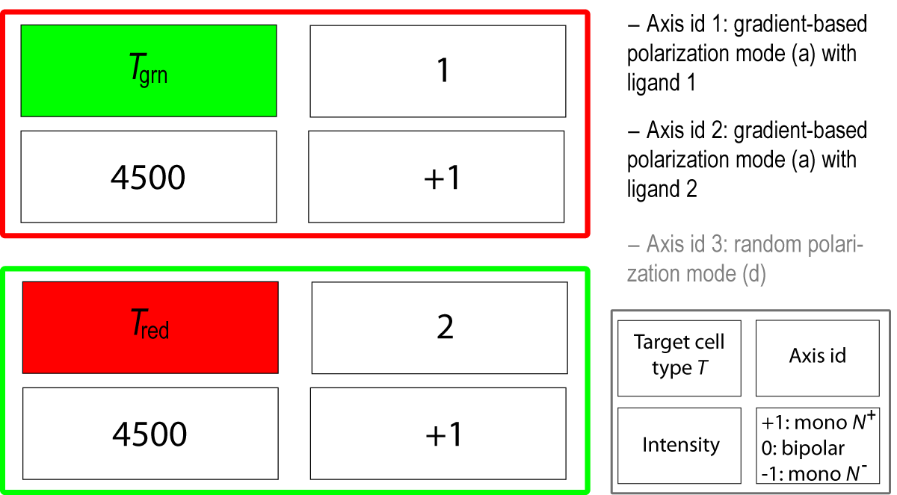
Experiment II active protrusion table \(\mathscr{A}\). See definition in Section 5.2.4 and text for details. In summary, protrusion behavior here is heterotypic, i.e. cells act only upon neighboring cells of the other type.
Experiment II results
Although here too cells exhibit a clear collective reassortment behavior (Fig. and Movie ), we observe again that the boundary line between the two populations does not tend to become flat, as would be expected from a classical cell sorting study. In this experiment, all cell polarization axes \(\vec{U}_i\) are roughly colinear and aligned with the horizontal direction. This is because at the later stages (after time step \(3500\)), the profile of the boundary line between the red and green populations is directly related to \(\eta\), the scalar product limit determining the positive polar neighborhood \(\mathcal{N}^{t+}_i\) centered around \(\vec{U}_i\) (pie-slice shape in Fig. ). This is due to the fact that for a green cell near the boundary line, which protrudes toward the right side of the tissue, no red cells are present any longer in its polar neighborhood. Thus the tissue dynamics reaches an equilibrium state, in which the boundary line exhibits a jagged shape. Thus the way that protrusion behavior is modeled here is not sufficient to reach the ideal straight boundary of a cell sorting phenomenon, and additional mechanisms are needed.
Experiment II: Ligand-based heterotypic protrusion, planar diffusion sources. See text for comments. Two hidden ligands are diffusing from the left and right borders of the cell bilayer. Green cells' polarization axes are oriented toward the right source and red cells' axes toward the left source. Each cell type is exerting monopolar protrusion over the other cell type (heterotypic contacts). Experiment II: Ligand-based heterotypic protrusion, planar diffusion sources. For caption, see Fig. .
The third experiment is similar to the second one, with strong homotypic and weak heterotypic adhesion (same passive force table \(\mathcal{P}\) as in Fig. ), but here a single ligand is secreted from the center of the swarm (Fig. ). Moreover, protrusion polarities are in opposition here: while red cells orient their polarization axes toward the source of the ligand (uphill along the local gradient), green cells by contrast orient theirs away from that source (downhill) (Fig. ).
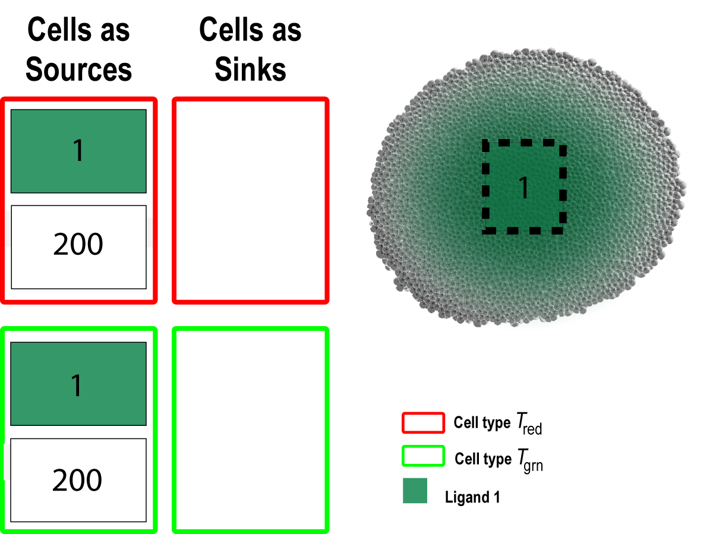
Experiment III ligand diffusion table \(\mathscr{L}\). See definition in Section 5.2.2 and text for details. The differences with Experiment II's table \(\mathscr{L}\) is a unique source of ligand \(Q_1\) and a central region of secretion creating a (quasi) radial gradient.
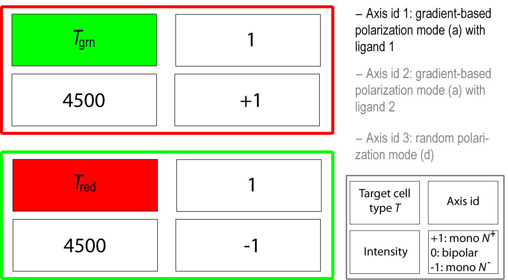
Experiment III active protrusion table \(\mathscr{A}\). See definition in Section 5.2.4 and text for details. The differences with Experiment II's table \(\mathscr{A}\) is that the polarization mode relies on only one type of ligand \(Q_1\) and the green cells' monopolar protrusion is oriented in the negative direction.
Experiment III results
Similarly to the previous experiment, cells reassort properly but, also for the same reasons, the boundary line between the red and green cell populations is not smooth (Fig. ).
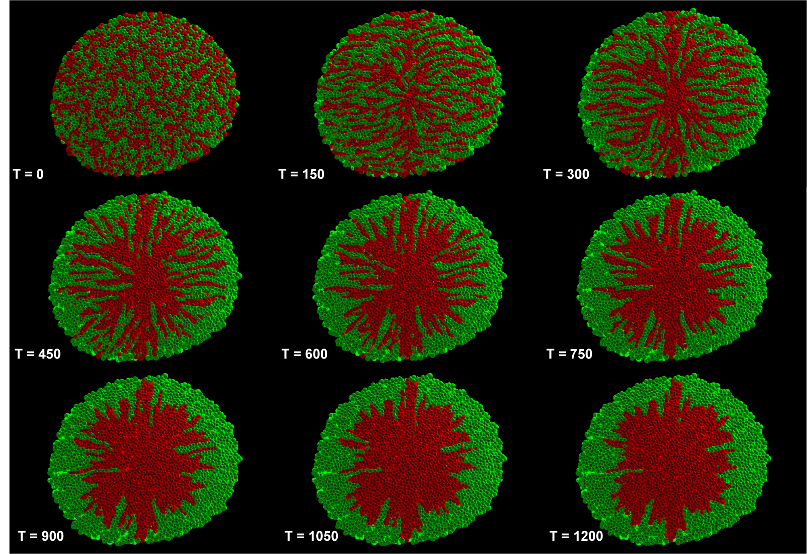
Experiment III: Ligand-based heterotypic protrusion, radial source. See text for comments. A single ligand is diffusing from the center of the cell bilayer. All cells' polarization axes are roughly radial, the red ones oriented toward the center (uphill along the gradient) and the green ones away from the center (downhill). As in Experiment II, each cell type is exerting monopolar protrusion over the other cell type (heterotypic contacts).Experiment III: Ligand-based heterotypic protrusion, radial source. For caption, see Fig. .
5.3.2. Individual Cell Migration
Experiment IV setup
This last experiment is meant to illustrate the generality of the protrusive behavior in MECAGEN, which can also serve as a model of individual cell migration. The mechanisms and parameters involved in this study are similar to the above sorting experiments. They also include passive adhesion and ligand-based chemotactic protrusion. We designed a simple scenario to qualitatively mimic the migrating behavior of the germ cells observed in zebrafish embryos by Erez Raz (Fig. , right column and Movie ). Three populations are involved: (\(\mathcal{T}_1\)) a population of packed cells secreting a ligand (in red), (\(\mathcal{T}_2\)) a few migrating cells (in green) that are attracted by the ligand, and (\(\mathcal{T}_3\)) a vast majority of inactive cells (not shown in the real images; shown in gray in the simulations). The migrating cells orient their polarization axis according to the chemotactic mode and exert monopolar protruding activity over their neighbors. The parameters of the passive adhesion forces are the same for all cells in this experiment.
Experiment IV results
We observe that the simulated cells (Fig. , left column and Movie ) behave in a fashion similar to the real cells imaged by Erez Raz, validating the notion that the same active force model based on polarization axes and protrusion can underlie various cell motility behaviors such as sorting, intercalation, and migration.
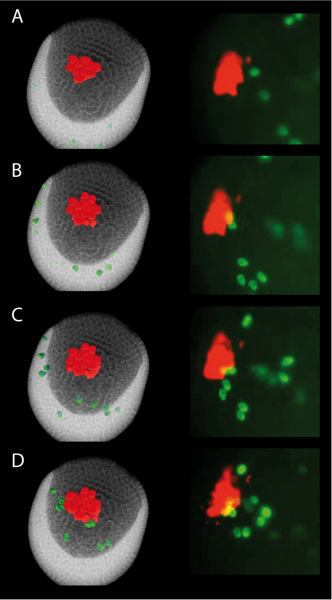
Experiment IV: individual cell migration. Left: Simulation involving a three-type cell population: a few cells secrete a ligand (the red color represents its thresholded concentration), the green cells are exerting monopolar protrusion over all their neighbors oriented uphill along the gradient, and the gray cells are inactive. Right: Microscope images of germ cells (green) migrating toward central cells expressing SDF-1a (red), which serves as a guidance cue. Images from the right column adapted from the E. Raz Lab's website http://zmbe.uni-muenster.de/institutes/izb/izbres.htmExperiment IV: simulation of individual cell migration. For caption, see Fig. , left column.Experiment IV: recording of individual cell migration. Microscope movie from the E. Raz Lab's website http://zmbe.uni-muenster.de/institutes/izb/izbres.htm. For caption, see Fig. , right column.